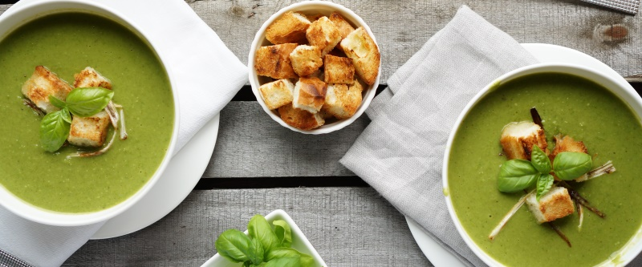

Суп-пюре Зеленый

Поставить чайник для кипятка. В кастрюлю положить следующие ингридиенты: 200 гр. брокколи, 200 гр. цветной капусты, 3 картофелины, половину белого стебля лука-порея, 1 небольшой очищенный кабачок и 0,5 ст.л. соли. Залить кипятком так, чтобы только покрывало овощи. Варить после начала кипения 15 минут. Убрать пару черпаков воды, оставшуюся смесь измельчить в блендере с зубчиком чеснока и стаканом молока.
Подавать с сухариками из белого хлеба.